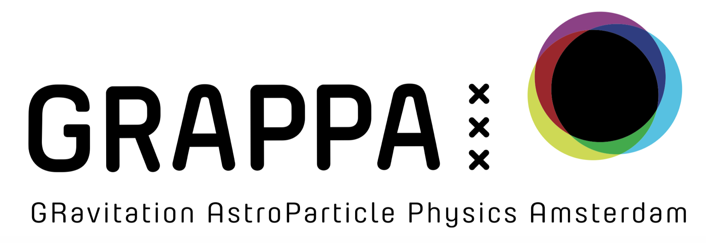

| Date | Speaker | Host @ GRAPPA | Title | Abstract | Affiliation | Location |
|---|---|---|---|---|---|---|
| 08/09/2026 | Mudit Garg | Gianfranco Bertone | Multi-messenger Astronomy via Massive Black Hole Binaries | We are entering a golden decade for transient science on massive black holes (MBHs) in Milky Way–like galaxies, with the optical facilities LSST and Roman, and the space-based GW observatory LISA coming online. The gas disks that torque MBH binaries (MBHBs) to overcome the "final-parsec problem," i.e. merging them within the lifetime of the Universe, often persist as an environment through coalescence. Yet we lack reliable models for both the optical light curves produced by disk–binary interaction and gas-induced perturbations to the GW waveform. In this talk, I will present semi-analytical modeling and (magneto-)hydrodynamical (MHD) simulations that improve the physical realism of these predictions. For MBHBs a few years from merger, I will show that including GWs and/or MHD turbulence, which most simulations omit, leads to better constraints on disk properties. | NYU | C3.023, GRAPPA, Science Park 904, Amsterdam |
| 22/09/2026 | Ilia Musco | Gianfranco Bertone | New perspectives on primordial black hole formation | Primordial black holes (PBHs) can form from the collapse of large cosmological perturbations in the early Universe. In this talk, I will discuss recent advances in our understanding of PBH formation and its dependence on the cosmological environment, from the radiation-dominated era to the electroweak and QCD phase transitions, as well as phases dominated by a massless scalar field. I will also highlight how nonlinear effects and the detailed dynamics of collapse can influence the resulting PBH mass spectrum and abundance. These developments have important implications for the role of PBHs as dark matter candidates, possible sources of gravitational waves, and potential seeds of the supermassive black holes observed at high redshift. | University of Nova Gorica | C3.023, GRAPPA, Science Park 904, Amsterdam |
| 13/10/2026 | Carlos Palenzuela-Luque | Philipp Moesta | TBD | TBD | Universitat de les Illes Balears (UIB) | C3.023, GRAPPA, Science Park 904, Amsterdam |
| 27/10/2026 | Teresa Bister | TBD | TBD | Radboud University | ||
| 10/11/2026 | Jakob Stegmann | TBD | TBD | Max Planck Institute for Astrophysics (MPA) | ||
| 25/11/2026 | Roberto Trotta (joint w/ API) | TBD | TBD | SISSA | ||
| 08/12/2026 | Kelly Holley-Bockelmann (joint w/ API) | TBD | TBD | SRON | ||
| 12/01/2027 | Concettina Sfienti | TBD | TBD | Johannes Gutenberg University Mainz | ||
| 26/01/2027 | ||||||
| 09/02/2027 | ||||||
| 23/02/2027 | ||||||
| 09/03/2027 | ||||||
| 23/03/2027 | ||||||
| 13/04/2027 | ||||||
| 27/04/2027 | ||||||
| 11/05/2027 | ||||||
| 25/05/2027 | ||||||
| 08/06/2027 | ||||||
| 22/06/2027 |